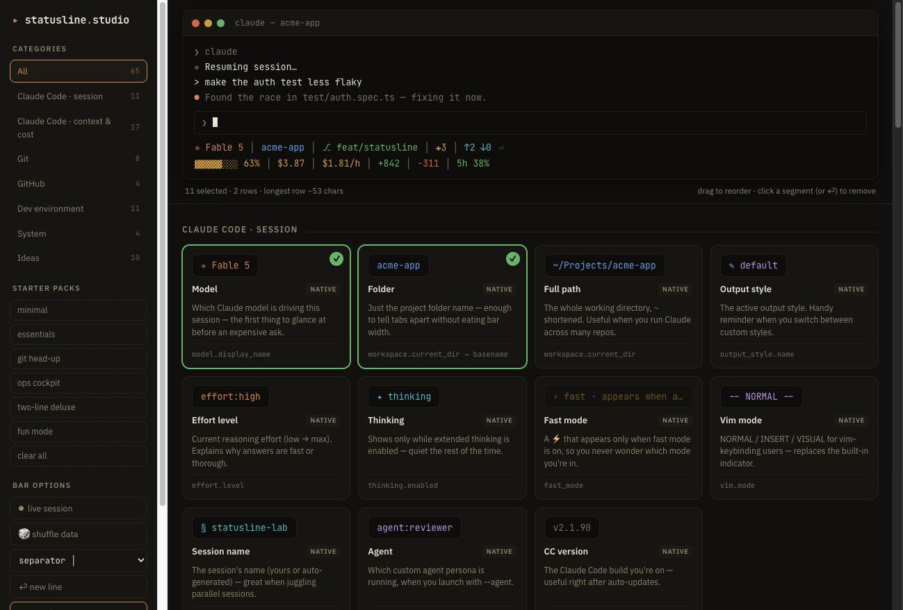

Compose from 65 live-simulated data points — context, cost, git, CI, even the song you're playing — watch the bar react in real time, then hand Claude the exact spec and a screenshot to build the real thing.
Click cards to add segments; drag to reorder; add ⏎ line breaks for multi-row bars. A live ticker fakes a real session so you see thresholds flip green → yellow → red.
copy for Claude produces a precise build spec — rows, sources, glyphs,
exact truecolor hexes, caching rules. 📸 screenshot captures the target
rendering as a PNG.
Paste both into Claude Code. Claude writes ~/.claude/statusline.sh, wires
up settings.json, and compares its output against your screenshot until it matches.

Threshold colors, conditional segments that hide when inactive, multi-row layouts, truncation warnings past 80 chars — designed against Claude Code's actual statusline contract.
The spec pins every segment to a 24-bit ANSI color, so what you designed is what your terminal renders — no theme drift.
The exported spec ends with your target screenshot, so Claude can diff its own output against the design and iterate until they match.
Free, open source, one HTML file. No build step, no accounts, no telemetry.